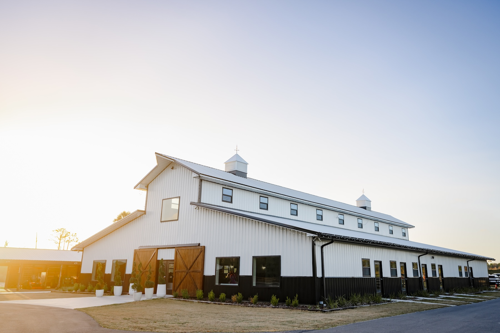
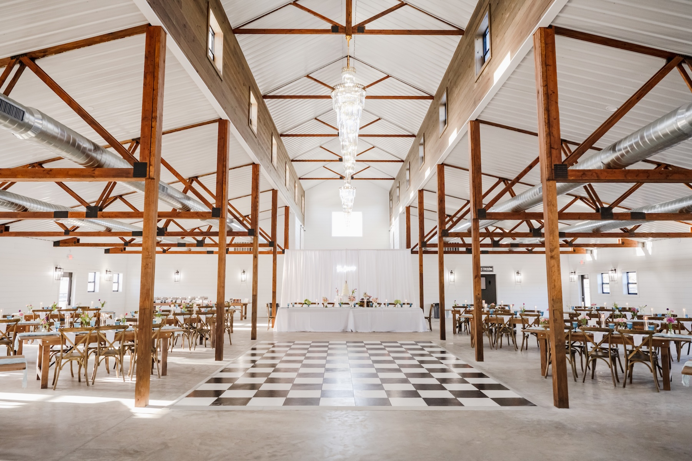
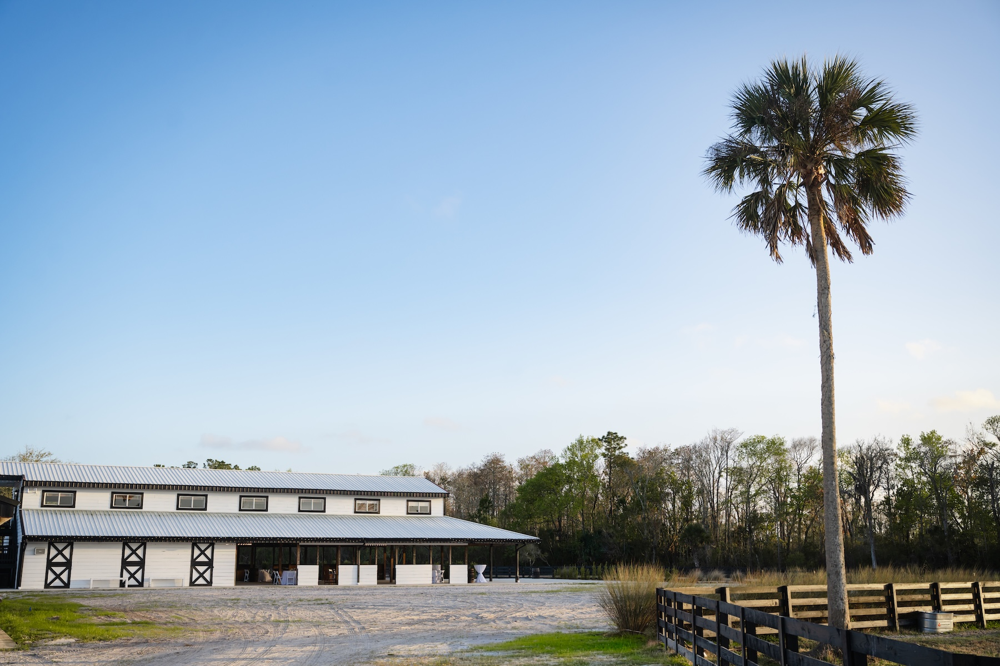
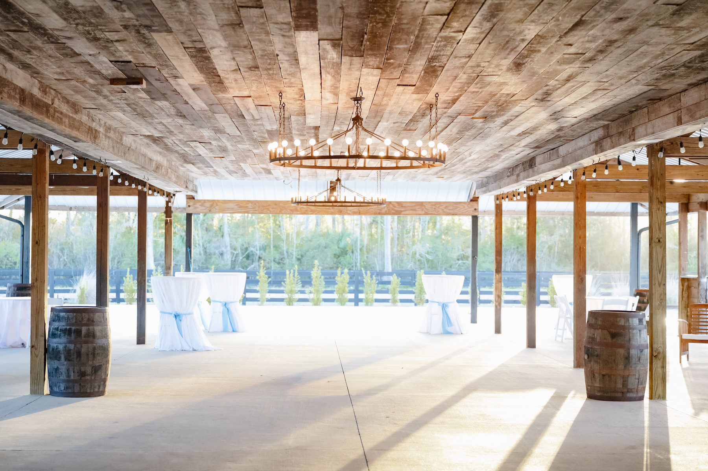
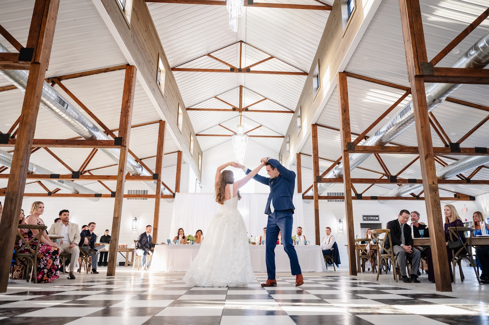
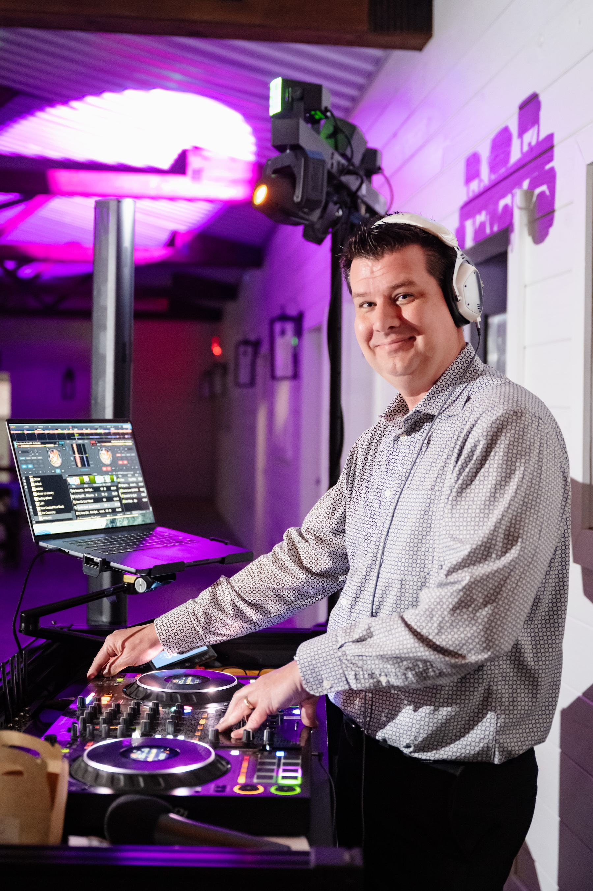
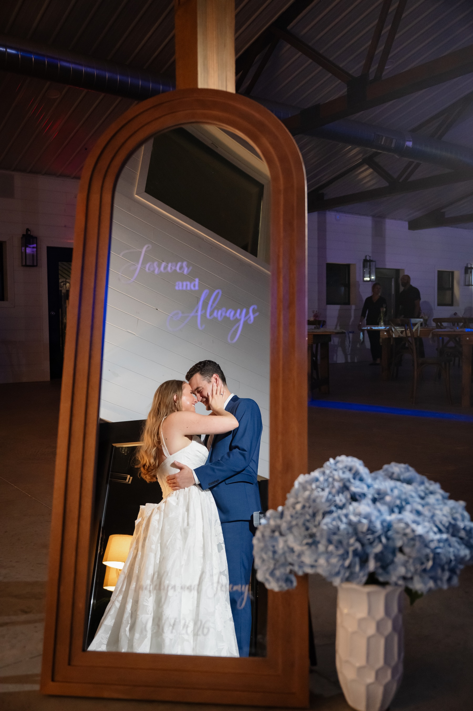
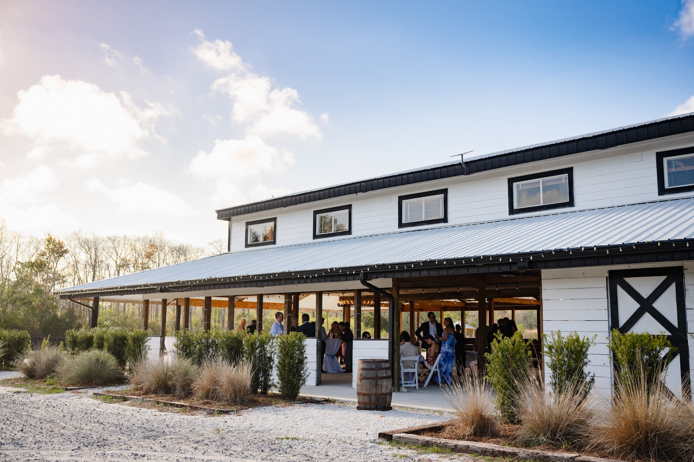
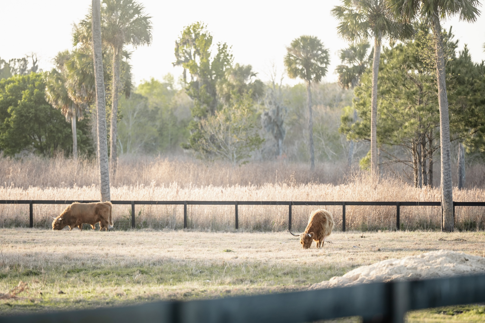
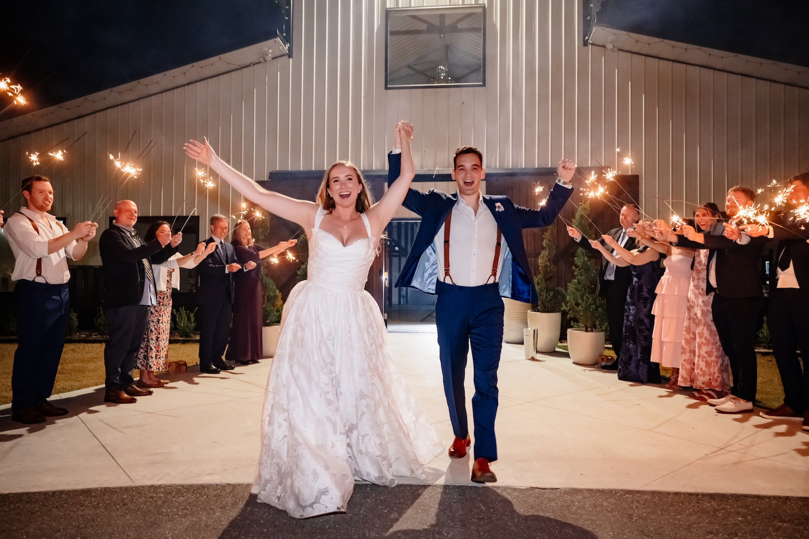

Three distinct barn and farmhouse venues across 1,500 acres of Florida countryside — here’s what to know before booking your wedding at Ancient City Farmstead near St. Augustine.
Ancient City Farmstead is a 1,500-acre working farm and event property located in St. Johns County — near the World Golf Village area, about 20–30 minutes from downtown St. Augustine and roughly 35–40 minutes south of Jacksonville. The property takes its name from St. Augustine’s identity as the nation’s oldest city and channels a rustic-meets-elevated aesthetic that has made it popular with couples who want the farmhouse barn look without the rougher edges of a purely DIY venue.
What distinguishes Ancient City Farmstead from other barn venues in Northeast Florida is the scale of the property and the range of spaces available. Rather than a single barn, the property offers three distinct venues — a climate-controlled reception barn, an open-air original barn, and a 5,000-square-foot log cabin — which can be used individually or in combination depending on the size and style of your wedding.

Each of the three spaces at Ancient City Farmstead has its own character, capacity, and purpose:
Climate-controlled barn with farmhouse tables & chairs, food prep kitchen, fire pit, and outdoor ceremony areas. Seats up to 300 guests.
Open-air original barn with an in-house custom bar, designer restrooms, and ceremony arbor. Up to 300 white folding chairs. Views of wild horses and sunsets.
5,000 sq ft log cabin with bridal & groom suites, full kitchen, wraparound porch, and indoor bar. Seats up to 50, accommodates up to 100.
The Grand Cypress is the most popular choice for receptions due to its climate control — a meaningful consideration for Florida summers and unpredictable weather. The Sanctuary provides a more organic outdoor-barn feel and works well for ceremonies or cocktail hour. The Farmhouse is typically used as a getting-ready space or for smaller, more intimate gatherings.


The most common configuration at Ancient City Farmstead is to use multiple spaces across the day. The wedding party typically gets ready in The Farmhouse’s bridal and groom suites in the morning and early afternoon. Guests arrive to an outdoor ceremony — either in The Sanctuary or one of the outdoor ceremony areas on the property grounds, depending on the season and preferences. After the ceremony, cocktail hour often flows into the outdoor areas or The Sanctuary while the reception space is finalized, and dinner and dancing take place in the Grand Cypress.
Because the spaces are spread across the property rather than stacked in a single building, the wedding day has a natural rhythm of moving between environments — which gives the event a different feel than an all-in-one venue where everything happens in the same room. For entertainment, that spatial layout means coordinating which spaces need sound and when.

Entertainment planning at Ancient City Farmstead depends on which spaces you’re using and how the day is structured. The Grand Cypress is the most straightforward setup — it’s an enclosed climate-controlled barn with good acoustics, a defined dance floor, and clear power access for a full DJ setup. If your reception is in the Grand Cypress, the entertainment setup looks similar to any indoor event venue.
The Sanctuary is an open-air barn, which introduces different considerations. Speaker placement matters more in an open space, and the outdoor acoustic environment means different equipment positioning than an enclosed room. If you’re using The Sanctuary for ceremony sound or cocktail hour music, that setup gets planned separately from the main reception configuration.
The Farmhouse is small enough that a full DJ setup would overpower the space. If you want music in the Farmhouse during getting-ready or a small after-party, a more modest setup works better.
What we confirm before every Ancient City Farmstead event: which of the three spaces is in use for ceremony, cocktail hour, and reception; power access at each location; speaker placement plan for any open-air spaces; and load-in timing with the venue coordinator.

If you’re adding a wedding photo booth, the Grand Cypress has the most room for a mirror booth or 360 video setup positioned so guests encounter it naturally during cocktail hour and between dinner and dancing. We plan placement during pre-event coordination so the booth gets used, not ignored.


Looking for a wedding DJ near St. Augustine or for an Ancient City Farmstead wedding? Footloose Entertainment’s DJ & MC packages start at $1,495, with final pricing shaped by guest count, hours of coverage, and add-ons. See what’s included or request a quote for your date.



The Grand Cypress barn and The Sanctuary each seat up to 300 guests. The Farmhouse is a smaller, more intimate space — seating up to 50 or accommodating up to 100 depending on the setup.
The Grand Cypress is a climate-controlled barn with farmhouse tables and chairs, a food prep kitchen, and outdoor areas. The Sanctuary is an open-air original barn with an in-house custom bar, designer restrooms, and a ceremony arbor. The Farmhouse is a 5,000 sq ft log cabin — ideal for smaller celebrations or getting-ready, with a full kitchen, bridal suite, and wraparound porch.
The Grand Cypress barn is climate-controlled. The Sanctuary is an open-air barn, which provides a rustic outdoor feel but is an important factor to weigh for summer and early fall events in Florida.
Each of the three spaces has different acoustic and power considerations. The Grand Cypress is an enclosed barn with solid acoustics for a full DJ setup. The Sanctuary is open-air, requiring outdoor speaker placement and positioning. The Farmhouse is intimate enough that a more modest setup works. Footloose Entertainment coordinates with the venue in advance to confirm which space you’re using and plan accordingly.
Yes. The Grand Cypress has the most space for a mirror booth or 360 video setup alongside the dance floor. The Sanctuary works well for a backdrop-style setup near the entrance. We plan placement based on your space and event flow.
Ancient City Farmstead is located in St. Johns County near the World Golf Village area, approximately 20–30 minutes from downtown St. Augustine and about 35–40 minutes south of downtown Jacksonville.